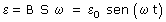

La ley de Faraday indica que la variación del flujo magnético que atraviesa una espira induce en esta una f.e.m y por tanto, hace circular una corriente. Mientras haya variación de flujo habrá f.e.m. Una forma sencilla de conseguir que cambie continuamen-te el flujo es hacer que la espira gire dentro de un campo magnético
Como recordará alguno que otro dφ/dt es la velocidad angular ω, además la posición angular φ se puede expresar como ω·t, entonces resulta:  Resulta que la magnitud de la f.e.m oscila con amplitud ε0 y frecuencia angular ω. Esta f.e.m oscilante produce una corriente de intensidad variable cuyo sentido se invierte cada medio período de rotación de la espira. Una corriente de este tipo se denomina 'corriente alterna' |